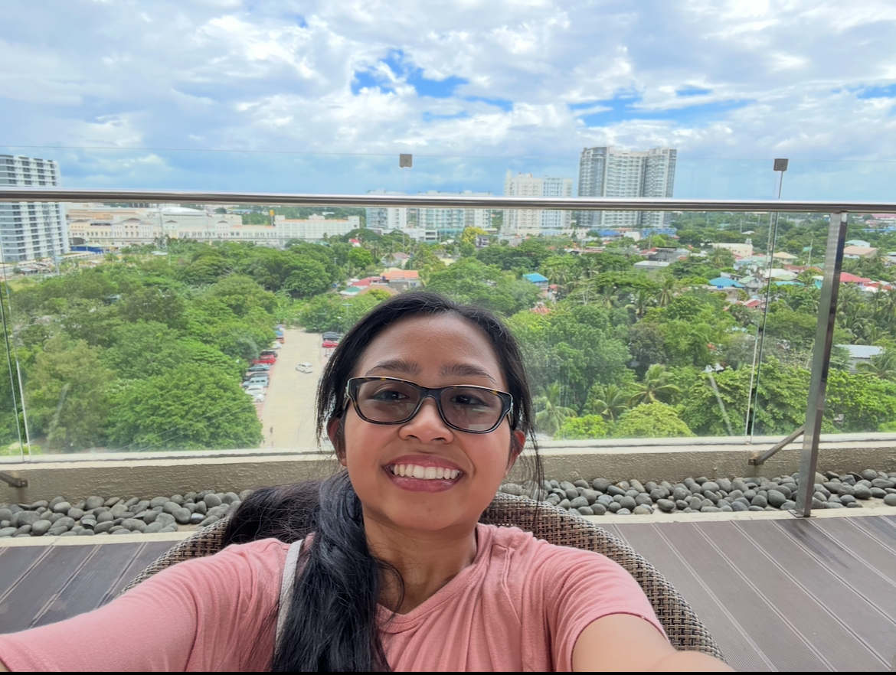

Discord: pickity_dsp
About myself
I am a senior at Lewis University and I am studying Cybersecurity with a minor in Computer Science. Ever since my programming class in highschool, I have always been interested in technology, particularly in the security aspect, which has motivated me to learn more skills and knowledge that can be used to protect devices, systems, and networks
In my free time, I enjoy taking walks and hanging out with my friends on campus. My favorite movie genre to watch is horror, action, and mystery. I enjoy reading mystery and thriller books because I love trying to figure out clues and the overall plot. I think it makes the reading experience much more fun.
Reasons for pursuing this degree: The reason why I am pursuing a cybersecurity degree because I have a strong interest in the security aspect of the technology field. I want to be involved in protecting infrastructure and data from cyber threats

• Applying Cloud Computing Concepts
• Web Services
• Software Testing
• Project Management
I enjoy painting, crafting, and reading in my free time because of how relaxing and fun both activies are. I enjoy painting because it allows me to express myself and my emotions through art. Crafting is also a fun hobby of mine because I enjoy making things with my hands and being creative. Reading is also a hobby of mine because I enjoy getting lost in a good book and learning new things.
External Links to Information About My Hobbies:
Painting Biking ReadingA fun fact about me is that I collect stickers from the places I visit asa way to remember my travels.